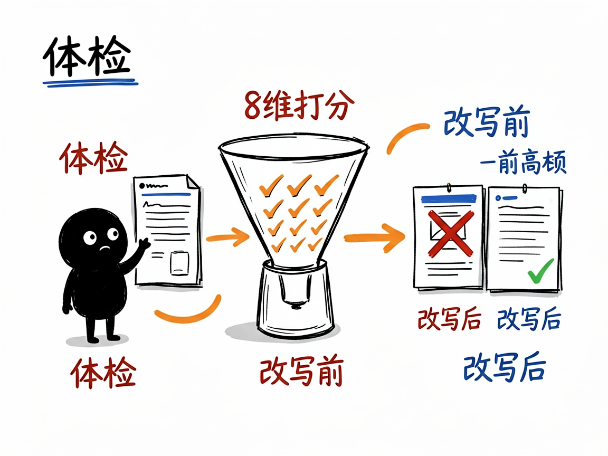

你的亚马逊商品，AI 导购看得懂吗？—— amazon-listing-alexa-optimizer 介绍
你在亚马逊上卖东西，买家现在可能不再自己翻页找货了——他们直接开口问语音助手："给我推荐一款适合欧洲旅行用的转换插头"。亚马逊在 2026 年正式上线了"Alexa for Shopping"（把 AI 购物助手整合进语音购物），也就是大家说的"AI 导购"。如果 AI 看不懂你的商品页，它就根本不会把你放进推荐里。更麻烦的是，2026 年亚马逊还改了规则：美国站标题被砍到最多 75 个字符，还新增了一个叫 Item Highlights 的字段。
amazon-listing-alexa-optimizer 就是来解决这件事的。
你给它一份亚马逊商品页（标题、五点描述、图片文案、后台属性等），它还你一份"体检报告"加"改写方案"——告诉你哪里 AI 看不懂、怎么改才容易被推荐。

它到底能做什么
- 帮你做全面体检：从 8 个维度给商品页打分，包括标题、五点描述、新字段 Item Highlights、图片页（A+）、问答和评论、后台结构化属性、关键词布局等。
- 站在 AI 视角挑毛病：它会检查"AI 看完你的页，能不能回答四个问题——你到底是什么、适合谁和什么场景、解决什么具体问题、凭什么值得推荐"。回答不清，就难被推荐。
- 帮你写得更像"人话"：不再让你堆关键词，而是把卖点改成"回答问题"的写法，比如清楚写"支持哪些国家、带几个插孔、是否支持电压转换"。
- 给你新旧对照的改写示例：标题、Item Highlights、五点描述都给出改前改后，连字符数都帮你算好。
- 顺手排查五大常见误区：比如"拿到 Amazon's Choice 就一定被推荐""标题越短流量一定掉"这些想当然的坑。
- 给出一份 7 天落地清单：按轻重缓急告诉你先改什么、后改什么。

怎么用
你不需要记任何命令。在 codex / workbuddy 等 agent 装好 amazon-listing-alexa-optimizer 技能后，直接对 AI 说话就行：
场景 1：刚上架一款转换插头 你：帮我看看这个新品的亚马逊商品页，AI 导购能不能看懂、会不会把我推荐出去？ AI：它会从标题、五点、新字段等 8 个维度给商品页打分，指出 AI 看不懂的地方，并给你改前改后的写法，比如把"支持多国使用"改成清楚列出支持哪些国家、带几个插孔。
场景 2：标题被新规砍短了不知道怎么改 你：亚马逊说美国站标题最多 75 个字符，我原来的标题太长了，帮我重写得既能说清卖点又不超字数。 AI：它会帮你重写标题和 Item Highlights 字段，给出新旧对照，连字符数都算好，还顺手列出几个常见误区，避免你踩坑。
场景 3：想按计划一步步优化 你：我店里还有十几个老 Listing，给我一个先改哪个后改哪个的顺序。 AI：它会排出一份 7 天落地清单，按轻重缓急告诉你先改什么、后改什么，让你不用每天纠结从哪下手。
谁适合用
- 亚马逊美国站（及其他站点）的卖家、运营、Listing 优化师。
- 负责产品上架、商品页文案的跨境电商团队。
- 想提前适配"AI 购物"新规则的品牌方。
- 帮卖家做代运营、代写 Listing 的服务商。
一点说明
这个技能明确不承诺"改完一定被 Alexa 推荐"，因为亚马逊没有公开推荐算法的具体公式。所有建议都基于已经确认的变化（标题 75 字符新规、Item Highlights 字段、AI 广告入口等）。
另外，它不是一个普通人直接双击打开的 App，而是一个给 AI 助手（如 codex / workbuddy）用的"技能包"。你只要在 agent 里装好它，用自然语言把商品页内容交给它，它就会帮你做体检和改写。具体能力和最新规则以项目里的 SKILL.md 和 references 文档为准。